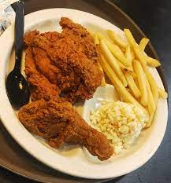

Arnold Spring Chicken Recipe

If you have spring chickens of your own,
you are probably more than familiar with the definition of this term.
“Spring chicken” typically means young chickens which are only available during the springtime intended for eating.
These chickens are normally less than 28 days old and weigh around 750 to 850 grams
Ingredients
- 2 tablespoons unsalted butter, softened
- 5 garlic cloves, 1 minced
- 1 tablespoon grated ginger, plus 12 slices ginger
- Salt and fresh black pepper
- One 4-pound chicken
- 1 onion, quartered
Steps
- Preheat oven to 425°F. Set rack in the lower third of the oven. In a small bowl, mix together the butter, minced garlic, and grated ginger.
- Pat the chicken dry. Rub half of the butter under the skin and half over it. Season the bird liberally with salt and pepper.
- Place the chicken breast-side-up on a rack in a roasting pan. Scatter the onion, garlic cloves, ginger slices, chiles, and lime around the bird and add 1/2 cup of water to the pan. Roast for 30 minutes, until the breast is beginning to brown in spots. Turn the chicken over and roast for 20 minutes
- Turn the chicken breast-side-up again, and add another 1/2 cup of water to the pan. Return to the oven for another 20 minutes, or until done.
- Tilt the chicken and drain the juices into the pan. Remove the bird to a serving platter
- Serve the chicken, passing the sauce on the side